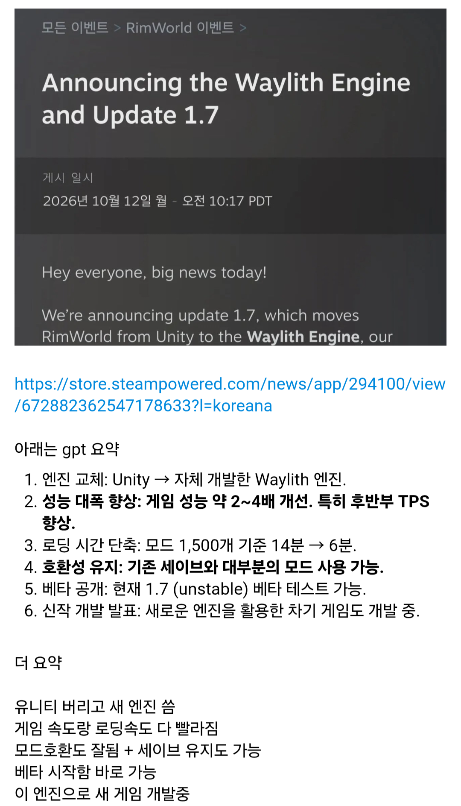

림월드 1.7 베타 소식과 짧은 요약
댓글
유니티가 범부됐음?
잠만 엔진 달라지면 모드들 다 싹 병신되는거아님??
lua로 후킹걸려있어서 아무 상관 없을거 같은데
Harmony가 유니티 기반 코드셋일걸
4번이 쩌네
왜 dlc는 없냐고 타이난
슬슬 뉴dlc구나
어흐흐 신이다 신이야
모드 100여개 있는거 다 돌려도 될듯
림 어게인
타이난이 초월공학 아닐까
슬슬 복귀해야겠네
10년된 게임을 모드들 적응하라고 유예기간까지 줬네.ㄷㄷㄷ 차기작 언급까지 된거보면
엔진 교체하고 dlc도 또 새로 낼거 같다고 예상하던데 타이난 그는 신이야.
후반에 마을 2~3는 만들기 편해지겠네
유니티는 악재네
자체 엔진이 좋기 쉽지 않은데 림월드에 완전 최적화된 툴인가보네
해보고싶은데 몇천시간 순삭 당할까봐 두려움..
엥.
엔진교체란게 겜 다시 안만들고 가능한거였음?
겉은 똑같은데 안에 내용은 수정됨
한국에도 자체 엔진 쓰다가 구려서 언리얼로 넘어간 게임사 있지 않나
그거 마비노기인데 겜 새로 만들고 있잖음
와 드디어 씹니티 탈출임? 다시 일으켜야겠구만
닭 절대 키우지마아아아
괴물쥐 림 어게인
삼탬 다시 부부로 만들어주면 좋겠당
또 림들 갈려 나가겠네
특이점이 오는군
내가 하기엔 너무 시간도 많이 뺐기고 스토리도 없어가 힘듬
근디 방송인들이 하는건 재밌음
유툽 편집까지 해주면 1시간 후딱감
치복씨는 오늘도
타이난이 진짜 인기게임개발자의 귀감임 이미 3대가 먹고 살돈 다 벌어놨는데 꾸준히 업데이트하는게 대단함
ㅈ보이드랑 다른 행보
개좆니티
와..
짤방으로 보면 갓겜 내가 하면 망겜
ai 발전으로 저런것도 가능해지네
타이난은 안그래도 괴물이었는데 이제 진짜 신의 영역에 발을 들이는듯
내부를 다 갈아엎는데... 모드가 멀쩡할리가 없는데...
Harmony같은 유니티 종속 코드들은 어떻게 하려는지 궁금하긴함
그럼 이제 림월드 없뎃되는거야...? ㄷㄷ;;